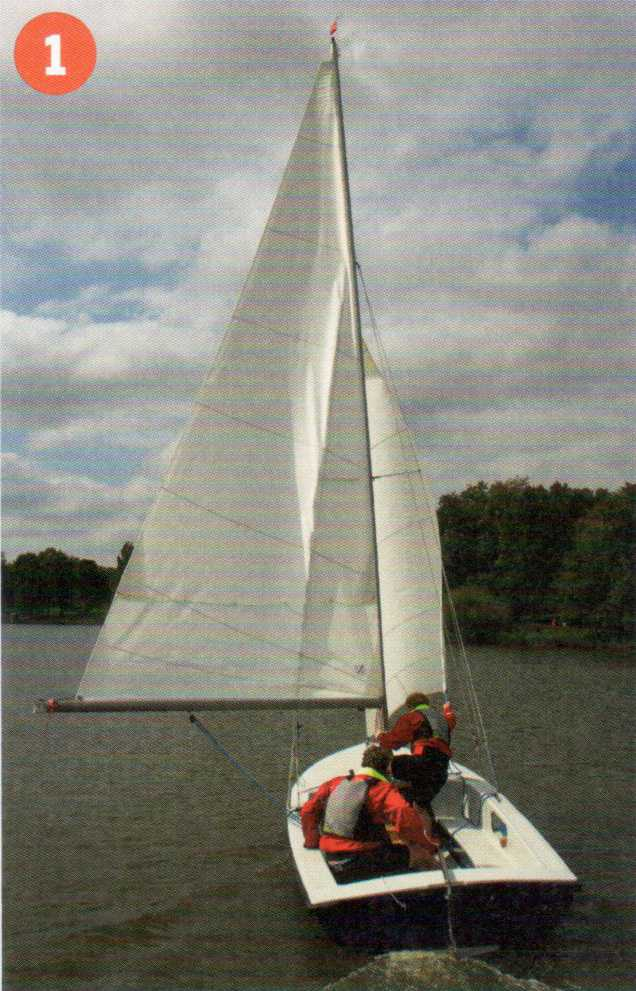
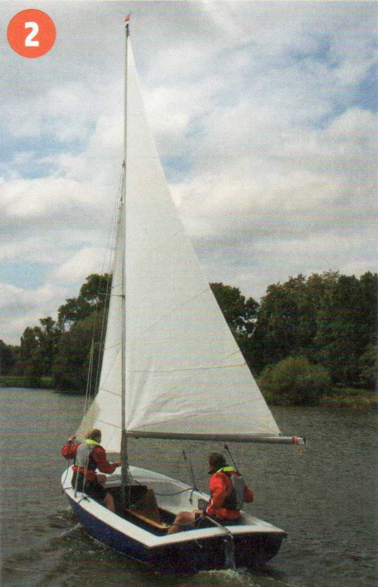
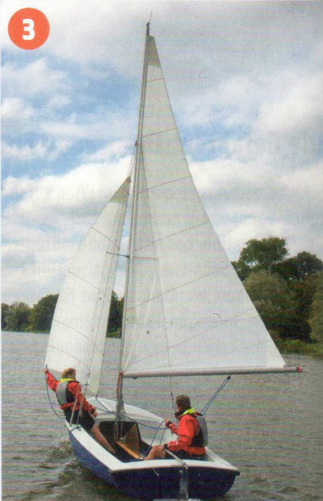
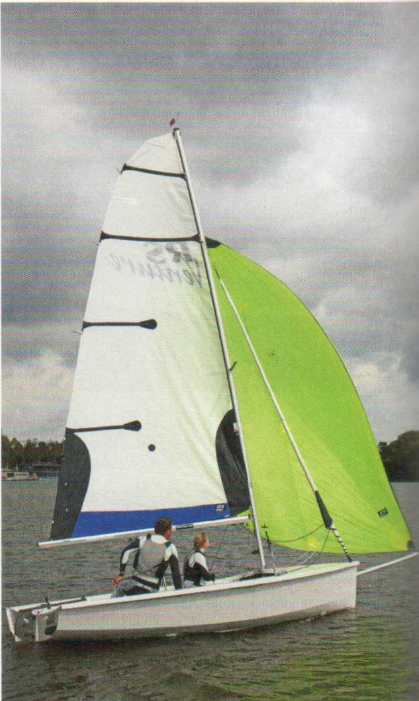
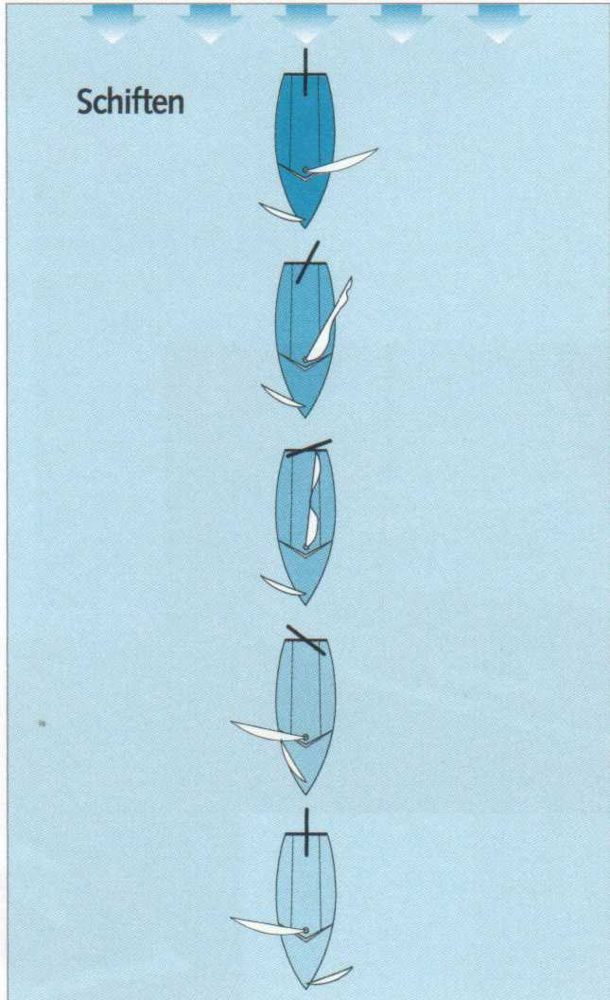

Schiften bedeutet das Wechseln der Segelseite unter Beibehaltung des Kurses vor dem Wind. Schiften ist auch die Phase beim Halsen, in der das Großsegel die Seite wechselt, der Baum also herumschwingt.
Das Wechseln der Segelseite kann notwendig sein bei Winddrehungen, aber auch beim Regattasegeln, um zum Beispiel die Bahnmarken auf der bevorteilten Seite ansteuern zu können oderdas Wegerecht zu erzwingen.

1 Vor dem Wind, Wind von Steuerbord.

2 Platzwechsel der Crew, Großsegel kontrolliert herumwerfen.

3 Vordem Wind, Wind von Backbord.


|
Kommandotafel Schiften |
|
Klar zum Schiften! Ist klar! Hol dicht die Großschot! Rund achtern! |